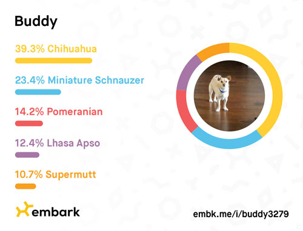
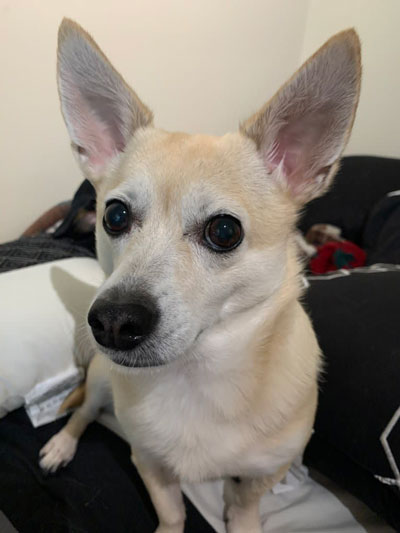
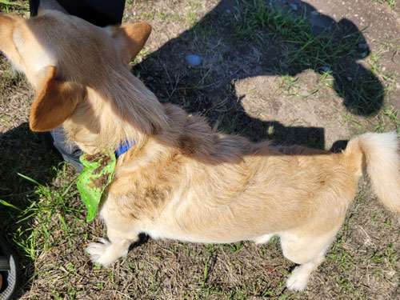
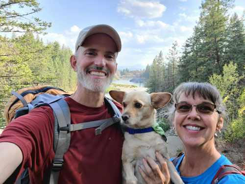

| You might have read by now that I suffered a
catastrophic hard drive failure in 2021 which took quite a few of my
photos with it. August was a month that got hit particularly
hard. I really only had one photo survive from this month, a family
selfie that I had thankfully texted to my parents. It was taken
during a 3-day outing that Buddy, Eric, and I enjoyed in Coeur d'Alene,
Idaho. We had a lot of fun that weekend, including rock climbing and
strolling around the beautiful city. You'll just have to take my
word for it though! |
|
 I sent away to have Buddy's DNA analyzed. He was just too
unusual-looking for me to rest |
 |
| Embark gave us some "DNA Relatives" of Buddy's who look
surprisingly similar. This is Gracie, she is 82% similar to Buddy in DNA percentages. I think she looks the most like him though. |
|
|
This is Twister, he is 87% similar to Buddy by DNA percentages. They look a lot alike, but I think Twister might be more of a
people-pleaser than Buddy, |
|
| This is Hank, he is 88% similar to Buddy by DNA percentages. When we first adopted Buddy, he had a "mane" like Hank's. The groomer wanted to dye it purple! |
|
 |
 |
| One day after a walk with Amy in which Buddy disappeared at the end for 45
minutes, he made things even worse by finally returning home covered in chunks of poop. Yipee. |
Here's the one photo that survived from our three-day vacation in Coeur d'Alene,
Idaho. It was a good trip, whether we have any proof or not! |